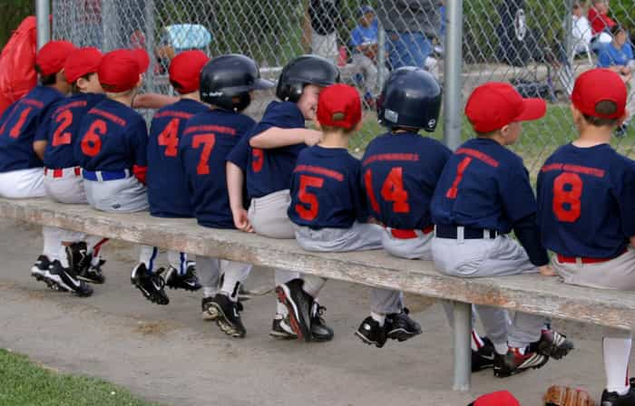

< < < Back
How My School’s Annual Baseball Game Was Destroyed – Return Of Kings
Our School’s Tradition
I remember when I was a kid, my school used to host an annual intramural baseball game. It was a huge event, which we the students all called the “Annual Baseball Game,” or simply, the Game. Every year, the best players from the year before picked the teams, and of course, the team captains always went on to pick the next best kids in line, because they wanted to win.
It was always a killer game. Like clockwork, every year the entire student body would make their way out past the black top to the baseball diamond, lunch boxes and Capri Suns in hand, anxious parents trailing a few yards behind.
Even kids from the other school across town, who were our rivals, used to sneak over the school’s fence to watch, and you could see the look of trepidation on their faces, since those kids on the field slamming homers and working like a precise, well-oiled machine to get out after out after out were exactly the ones they’d be playing in the upcoming city-wide All Star Game later in the year.
Even though I was never good enough to get picked for the team, I felt a tremendous sense of pride just watching the other kids play. It made me happy. That was my school. Every kid playing on that field, whether offense or defense, deserved to be there because they were the best.
We were the best.

The New Rules
Then one day, a few of the students who never got picked to play in the Annual Baseball Game complained that they felt left out. Their feelings were hurt, they said; they wanted to play, too; it wasn’t fair, why should only the athletic kids get to play?
So the yard narcs made a new rule that any student who wanted to play was guaranteed a spot on the team. Suddenly, the overwhelming flood of new players made picking teams impossible. The team captains threatened to quit.
The principal herself was called to settle the issue. The principal’s solution was to institute a lottery system, drawing the names of any student who wanted to play in the game from a hat to make sure the choosing was random, and therefore, fair. The choosing process was taken completely out of the team captains’ hands.
The game that year was a mess. Balls were dropped. Balls flew down centerfield without being caught by the right mitt. It didn’t look anything remotely like what a baseball game should. The team captains spent the whole hour screaming their heads off for their teams to get it right, but the new players—the ones who had demanded so vociferously that they be allowed to play—simply didn’t know what to do.
Where I had always felt a great sense of pride watching my school’s best and brightest kick ass, or get their asses kicked honorably in the name of Us, I suddenly felt something else. I felt ashamed. And I knew the rest of the audience did, too, because by the halfway point, most of the crowd had sauntered away from the bleachers, back to the other parts of the playground or indoors to play POGs or Magic cards. The only people left watching to the very end were the parents of the kids playing.
Meanwhile, our rivals from across town smirked and whispered amongst themselves, where they watched far away smoking cigarettes and leaning against the back fence of the school, their gleeful faces bright and confident that they would have this year’s All Star Game in the bag.
And they did. We got crushed that year. And the parents of the athletic kids, only a handful of whom had actually gotten to play in the intramural game thanks to the new lottery system, were livid. Our school spirit had suffered a critical blow, and the resulting defeat at the hands of our rivals was absolutely brutal, made even worse by the fact that it was our first loss since my parents had been students at the school, breaking a twenty-four year winning streak.
So, when the next year’s intramural game was being planned, the athletic kids’ parents got together and put out a flier urging the school authorities to return the Annual Baseball Game to its original rule set, letting the team captains choose their own teams without interference from above, and also that the lottery system be abolished.
But the non-athletic kids who weren’t good at playing ball were not about to give up their hard-won time in that glorious once-per-year spotlight in front of our entire community. Their parents, too, buckled down for a fight.
The Parent/Teacher Meeting
There was an emergency parent/teacher meeting called to determine the fate of the annual intramural ball game. The principal herself presided. Things got ugly. The room was divided into two sides: the athletic kids and their parents on one side, and the non-athletic kids and their parents on the other.
There was a lot of yelling. Any rational argument presented by either side was instantly drowned out by shout-downs of “That’s bullshit!” or “You just want YOUR kid to play!”
Eventually, one parent stood up and proposed the whole room take a vote. The audience sat down and those in favor of the new rules raised their hands, then everyone in favor of the old.
The majority of the room, by a fair margin, actually wanted to keep the old rules and let the team captains pick their teams. The principal wasn’t happy about this, but she respected the democratic decision of the parent/teacher meeting and made the call: the team captains could again pick their teams, and the lottery system was to be officially abolished.
Well, that would’ve been nice, but it didn’t last long.

The Protest
The non-athletic kids’ parents were so disgruntled that a few of them stormed out of the conference room, and the next day there was a protest in the staff parking lot of our school. A bunch of the non-athletic kids’ parents stood in the parking lot blocking the teachers’ parking spaces and holding signs with slogans like “No discrimination in our schools!” And “ALL children are special!” And “My child can play ball, too!” Some of the signs even had pictures of the principal with her face crossed out.
The story made the local news. I got interviewed and was on TV for all of ten seconds, saying I thought the whole thing was pretty dumb, and I just wanted to watch a good game. I was disappointed when the clip aired, because I got cut off, and when the segment shifted back to the anchors, they seemed to laugh at my opinion, going so far as to call the protesting parents “heroic” and the non-athletic kids “brave”.
To be honest, a lot of those kids looked like their parents were embarrassing them and they just wanted to go home. But, long story short, the principal caved. We all received a school email the following day after the news program aired, informing us that the old rules were being thrown out again, and the lottery was being reinstated. Also, there was one additional rule: no more team captains would be grandfathered in from the previous year’s games, and instead from now on the yard narcs would be the team captains.
The note ended with a somber mention that the Annual Baseball Game, our school’s great tradition, should include everyone of every ability, and that we all had different strengths and personalities that made us unique.
I remember thinking to myself: okay, but what the hell does that have to do with baseball?
A Game In Free Fall
We got crushed again at the All-Star Game that year, and the year after. By my second to last year, I stopped going to the annual intramural game all together, and only showed up at the city’s All-Star Game to see the girl I liked and to hang out with my friends.
I sure as hell didn’t care about our team. The really athletic kids who were good at baseball had all long since joined the county’s private youth league, since the Annual Baseball Game was a joke, and none of them had time to practice for or play in the All-Star Game, so only the mediocre kids played. Against our cross-town rivals, who practiced day-in and day-out to beat us, we were nothing. Hell, little old non-athletic, can’t-catch-a-fly-ball-for-nothin me could have made the team at that point with flying colors, but I didn’t want to. Our school was an embarrassment.
That night some of the kids from across town picked a fight with my friends and me. I didn’t know if it was because we were outnumbered, or because we just didn’t have enough school pride to really fight them with heart, but I distinctly remember it was the first time I ever got my ass handed to me in a fistfight. I went home with two black eyes, a fat lip, a chipped front tooth, and two broken ribs.
I wanted to kill those motherfuckers, but part of me also knew that if I had been them, I would have kicked our asses, too. The crushing defeat our school had suffered on the baseball diamond was their way of telling us this was their town. The beating was simply the boilerplate on the message.
Getting my ass kicked wasn’t the worst thing that ever happened to me. In fact, it may have been one of the best, because it forced me to confront my weaknesses in ways I hadn’t had a reason to before. It’s hard to ignore that your heart’s not in the fight when a bigger guy’s boot is kicking in your cheeks and teeth and ribs and you’re feeling every crunch like it’s a steel bat, just like you can’t ignore that your All-Star team is untrained and unprepared for the big game, shouldn’t even be a team at all, when you finally have to watch them getting hopelessly demolished from the bleachers.
Victory may be the greatest thing there is, but defeat isn’t the worst. The worst is a victory you’re given, but that you haven’t earned.
The New New Rules
I was in my last year of grade school when they stopped using hard bats and balls at the intramural Game. The principal had decided it was better to use wiffle balls instead, after some parents complained their kids were getting hurt at practice. Some girl didn’t catch the ball, and it hit her in the face. Her parents threatened to sue the school, then a bunch of other parents jumped on the bandwagon to say their child had been hurt too, and how could the principal let this happen, and didn’t she know this was an outrage, and that her job was at stake, and by God if she didn’t do something about this soon they would, and so on.
In all of one day, our school’s Annual Baseball Game turned into the Annual Wiffle Ball Game.
I didn’t really give a shit about any of it at that point. I remembered loving the Annual Baseball Game when I was a little kid, but that feeling was long gone. Me and a few of my friends showed up just to see what a joke it was, and what we thought would be a ridiculous spectacle turned out to be a completely depressing one instead.
The field was full of non-athletic kids. And I mean, really non-athletic. It was bad. I didn’t know who most of them were. I remember thinking: did they all come out of the Magic card room? Was this the first time they’d been outside all year? Not one of the pale, flabby bodies on that field looked like they could run a lap without stopping to catch their breath. I was embarrassed I had ever felt pride over such a farce.
A single cheering voice echoed from the bleachers. It was the mom of the kid currently batting. The other parents looked overheated, and bored. As her fat, red-faced Huffington rounded first base, Wiffle Ball Mom cupped both hands to her mouth and shouted: “Go on, honey! You can do it! Just do your best!”
Out of the corner of my eye, I saw the kid playing left field scoop up the ball on his fourth try, and cock his arm to throw it at second base. Then he paused and stayed there, not doing anything. I remembered a new rule the principal had instated, that any kid who hit the ball was to be allowed three bases before the opposing team could try to get them out.
The next year, after I graduated, the principal banned the concept of “outs” from the game entirely.
A few years later, my school pulled out of the All-Star Game too, the reason cited being a lack of financial support from the parents of the student body. But I think poor performance and lack of interest were bigger reasons. We hadn’t won the city’s All-Star Game in years. Forget that we’d been the champions for two decades. What point was there in showing up if no one cared?
Why Nothing Gold Can Stay
By the time my kids were enrolled at the school, the city’s school board had decided not to have an All-Star Game at all, claiming it bred the wrong kind of competition between the town’s two biggest elementary schools, and this rivalry could possibly lead to violence. I sure as hell never ratted out those guys who beat me up back in the day, and I’m sure me and my friends weren’t the only ones. But the school board pushed hard for friendly competition between the two districts on the opposite sides of our town, rather than rivalry. They even dumped a lot of money in advertising dollars, a large portion of their total yearly budget, into raising awareness for the campaign.
Instead of a citywide All-Star Baseball Game, we now have a citywide Wiffle Ball Game. Any kid from the age of 6-18 is allowed to join, regardless of ability and with no prerequisites, physical, mental, or otherwise. I checked it out one year not too long ago out of morbid curiosity, but I was the only person on the diamond other than the umpire, who the taxpayers were compensating either way, regardless of whether or not anyone else showed.
No one did.
Read more: What’s An Athlete To Do When It Comes To Rings Vs. Money?